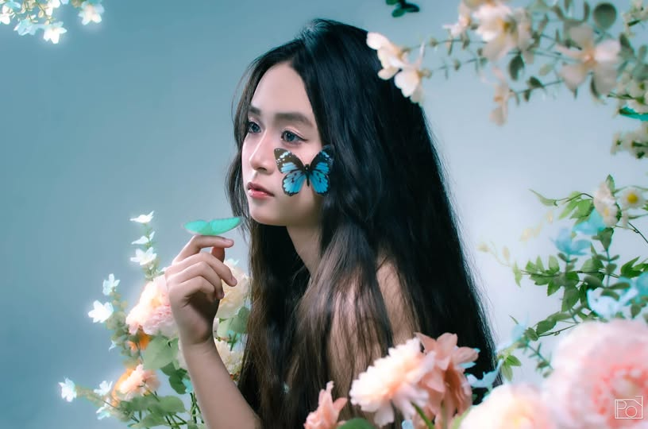

Giữa những xô lệch của thời gian, có những khoảnh khắc mong manh như tơ khói, khẽ chạm là tan. Song chính trong thời khắc ấy, dường như đâu đó trong ta đang lặng lẽ chuyển mình.
Không còn những vấn vương ngày cũ. Không còn mải miết đuổi theo ánh sáng, cũng chẳng trú ngụ mãi trong bóng đêm. Chỉ lặng yên giữa lằn ranh mong manh ấy, khẽ cựa mình như một cánh bướm vừa thoát khỏi lớp vỏ cuối cùng.
Là mơ hay là thực? Là phút níu giữ thứ gì đó sắp tàn, hay khoảnh khắc buông tay để chạm đến chân trời mới?
Chẳng ai biết chắc. Chỉ biết rằng, sẽ đến lúc ta phải tự mình gỡ bỏ chiếc kén của sợ hãi, để chuyển mình rực rỡ như cánh bướm kia. Chẳng phải chỉ để trở thành một ai đó toàn mĩ hơn, mà là để gặp lại chính mình sau bao lần quên lãng.
Và trong hành trình hóa thân ấy, vẻ đẹp đâu chỉ nằm ở hình hài ta đã trở thành, mà còn ở khoảnh khắc ta dám rũ bỏ những ngổn ngang còn đang bỏ ngỏ, để nhẹ nhàng thả mình vào khoảng không, nơi cái đẹp sinh ra từ chính sự mong manh, dịu dàng và tự do nhất.
Thanh Khôi
